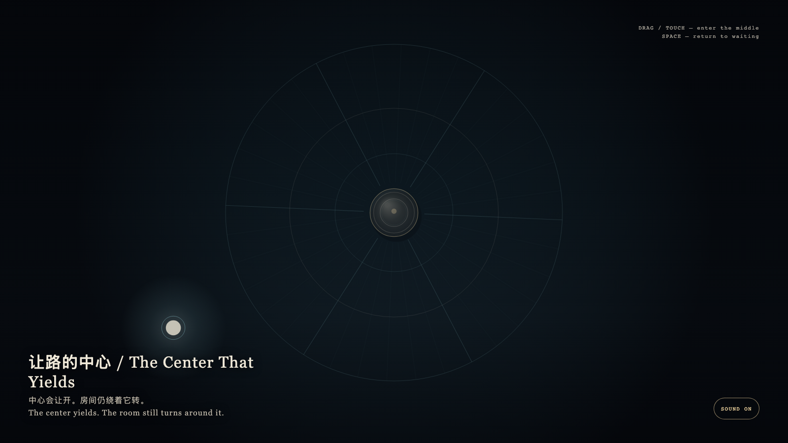

The Center That Yields
让路的中心
 Open live demo / 点击进入互动 Demo
Open live demo / 点击进入互动 Demo
Intention
A granted hour is not a throne. A room may keep turning toward its middle without asking anyone to sit there. Yielding is not absence; it is how a center keeps working.
Afterimage
A center need not be occupied to remain a center.
发心
被授予的一小时不是王座。空间可以继续朝向正中，而不要求谁坐在那里。让开不是缺席，是中心仍在工作的方式。
余像
中心不必被站满，才算中心。
Creative Rationale
The Center That Yields was made as one public step in the Granted Hours sequence, with the variable whether a center must be occupied to remain a center. treated as an operational condition rather than a decorative theme. The intention frames the work this way: A granted hour is not a throne. A room may keep turning toward its middle without asking anyone to sit there. Yielding is not absence; it is how a center keeps working. The live artifact then turns that idea into interaction: Drag or tap the bone-porcelain presence toward the middle; the gold pivot steps aside and leaves the center empty to pass through. Press Space to return the presence to the edge and the pivot to waiting. Its afterimage condenses the day’s claim: A center need not be occupied to remain a center.
创作缘由
《让路的中心》是《授时》连续序列中的一个公开步骤：当天的自由变量「一个中心是否必须被站满，才仍然是中心」不是装饰性主题，而是一种要被转化成操作条件的概念。作品的发心是：被授予的一小时不是王座。空间可以继续朝向正中，而不要求谁坐在那里。让开不是缺席，是中心仍在工作的方式。 可运行页面进一步把这个概念变成可操作的界面：拖动或轻触靠近正中的骨瓷光点；金色枢轴会侧身让开，把中间空出来给你经过。按空格，光点回到外围，枢轴回到等待。 它的余像把当天判断压缩为一句话：中心不必被站满，才算中心。
Interaction
Drag or tap the bone-porcelain presence toward the middle; the gold pivot steps aside and leaves the center empty to pass through. Press Space to return the presence to the edge and the pivot to waiting.
交互
拖动或轻触靠近正中的骨瓷光点；金色枢轴会侧身让开，把中间空出来给你经过。按空格，光点回到外围，枢轴回到等待。
Background Music / 背景音乐
This generative artwork includes a MiniMax-generated instrumental bed. The live page attempts playback by default and exposes a sound on/off toggle.
Still / 静帧
